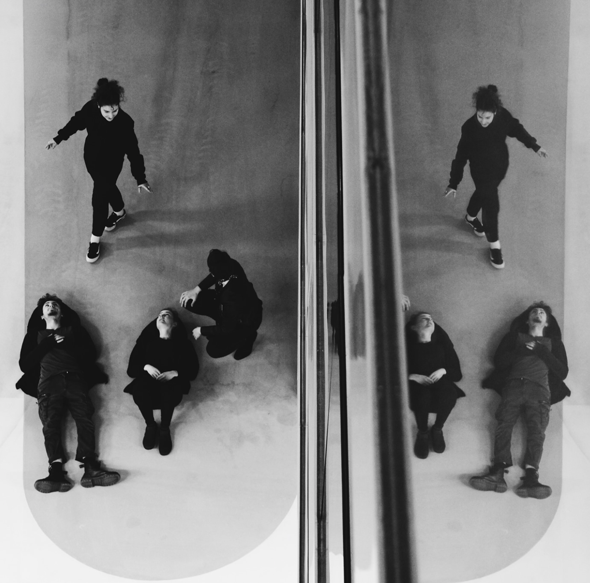
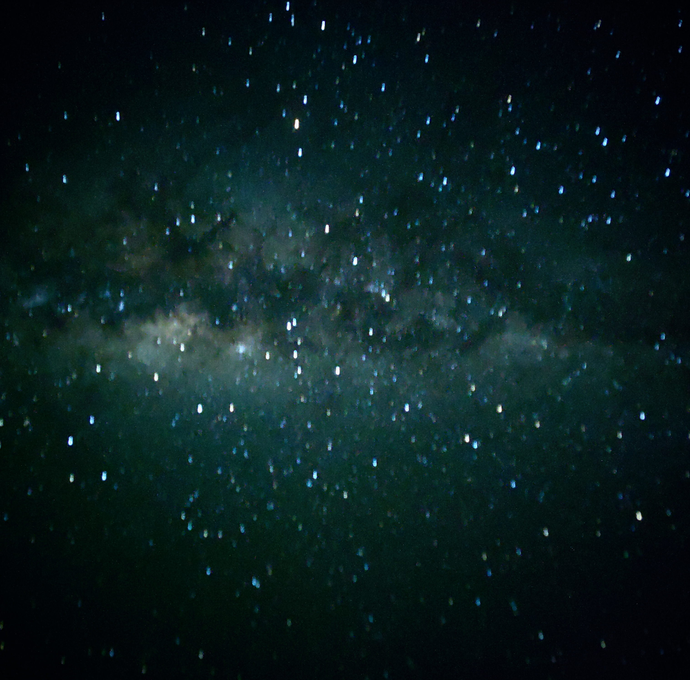

Genre: Progressive Rock / Art-Rock Instrument: Vocals Release Date: 10th of January, 2023 Location: Gothenburg, Sweden
“Flumine stands for river - a flow of change, dynamic sound waves and subtle rippling effects that ring in the ears and permeate the skin. Flumine’s songs are about authenticity, depth and real experiences, captured by abstract, poetic lyrics. At times rather emotional and reflective, other times more aggressive and energetic. Flumine’s music lets you devle into another atmosphere to immerse with the music and connect to your inner self. Music themes range from humanism, to equality and awareness.”
“Single: Drowning Echo - C.T. (Live at Simplon Poppodium)”

Track 1: Seek & Hide
Track 2: Abduction/Corruption
Track 3: Childhood Trauma
Genre: Post-Rock/Post-Punk/Grunge Instrument: Drums Release Date: 3rd of May, 2022 Location: Groningen, The Netherlands
“A haunting and absorbing sound emerges from Drowning Echo’s fusion of Grunge, Indie and Punk elements. Angry yet fragile vocals weave through distorted guitars, explosive drums and punchy basslines, crafting sonic landscapes that explore the shadowed territories of human experience. One composition delves into forces of corruption that seep through societal structures, questioning the unseen powers that manipulate from beyond our understanding, while another confronts the deep, lingering heaviness of childhood wounds - persistent shadows that follow and wait to absorb and swallow whole when our protective shells slowly crack and the past pierces through our weakest moments.”
“EP: Astralite - Psychedelic Journey”

Demo Track 1: Intro (Instrumental)
Demo Track 2: Dark (Instrumental)
Demo Track 3: Shadow (Instrumental)
Demo Track 4: Shadow Of The Sun (Acoustic)
Genre: Psychedelic Rock / Classic Rock Instrument: Drums & Vocals Release Date: 11th of June 2021 Location: Groningen, The Netherlands
“Psychedelic Journey marks Astralite’s debut EP, offering listeners a transcendent sonic experience that blends atmospheric textures with hypnotic rhythms. Each track serves as a portal to different states of consciousness, with the attempt to translate inner experiences into sound. From the ethereal opening notes of”Intro” to the acoustic-driven finale “Shadow Of The Sun,” this EP represents a seamless fusion of electronic production techniques with organic soundscapes. Each track is a different facet of the same journey — moving from curiosity to darkness, through complexity, and finally arriving at a place of acoustic simplicity.”
Youtube Videos
Flumine - Flumine | Vocals | Concert at Ericsson | Gothenburg | SE | 2022